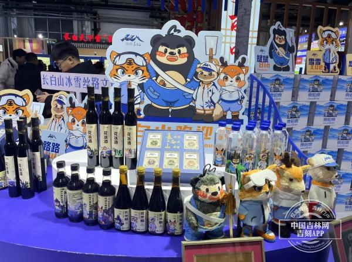
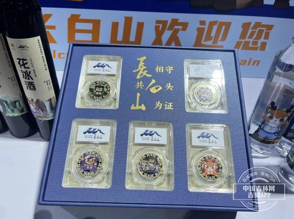
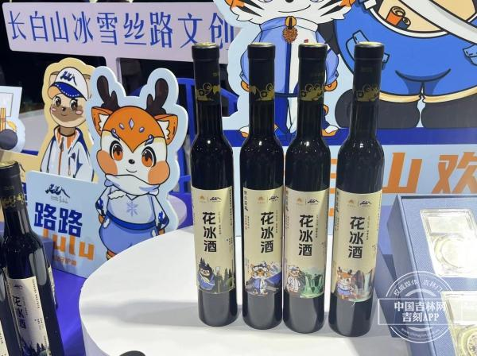

长白山文创 
长白山文创攻略|写给来到长白山的朋友
斌斌、雪雪、思思、路路，以黑熊、东北虎、紫貂和梅花鹿四个具有代表性的国家级保护动物为形象的长白山冰雪丝路超级IP，在本届雪博会8号馆长白山展位上闪亮登场。 这是长白山冰雪丝路中的10余种文创产品首次亮相。展位上以长白山冰雪丝路超级IP为形象的衍生产品也非常多，最引人注目的莫过于一套设计独特的纪念章，极具收藏价值， 还有联名的米醋、酱油、蓝莓酒等产品。吉林本土优质矿泉水品牌“泉阳泉”，也与长白山冰雪丝路做了联名，这也是泉阳泉二十多年来的突破，这款联名产品在本届雪博会上进行了首发。
泉阳泉市场部工作人员邹宝红说："泉阳泉作为长白山本土企业，22年来一直致力于天然矿泉水的生产与销售，与冰雪丝路联手共同打造泉阳泉文创新包装产品，在本届雪博会首发， 也是公司产品形象升级的一次突破与创新。冰雪丝路融入了丰富的长白山文化元素，能够满足消费者追求个性和品位的需求，与泉阳泉天然矿泉水的结合，能够吸引更多年轻消费者的注意力， 增加了趣味性和满足感，同时提升双方企业的品牌形象，展示企业的创新能力和文化内涵，共同促进吉林长白山产业的发展和繁荣。"


